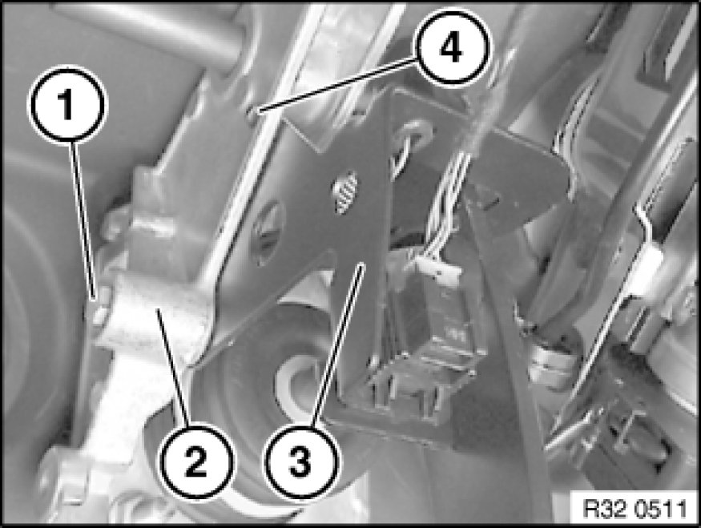
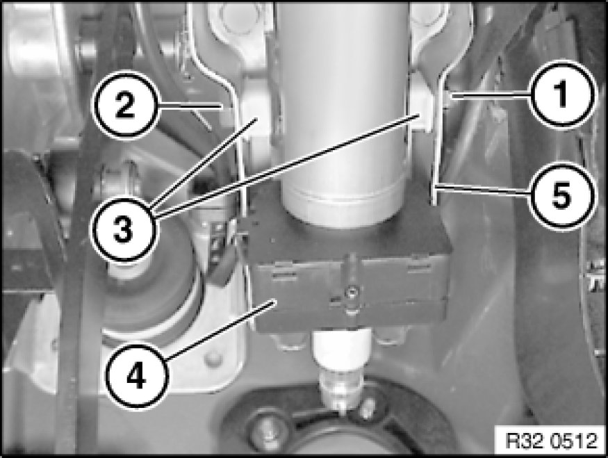
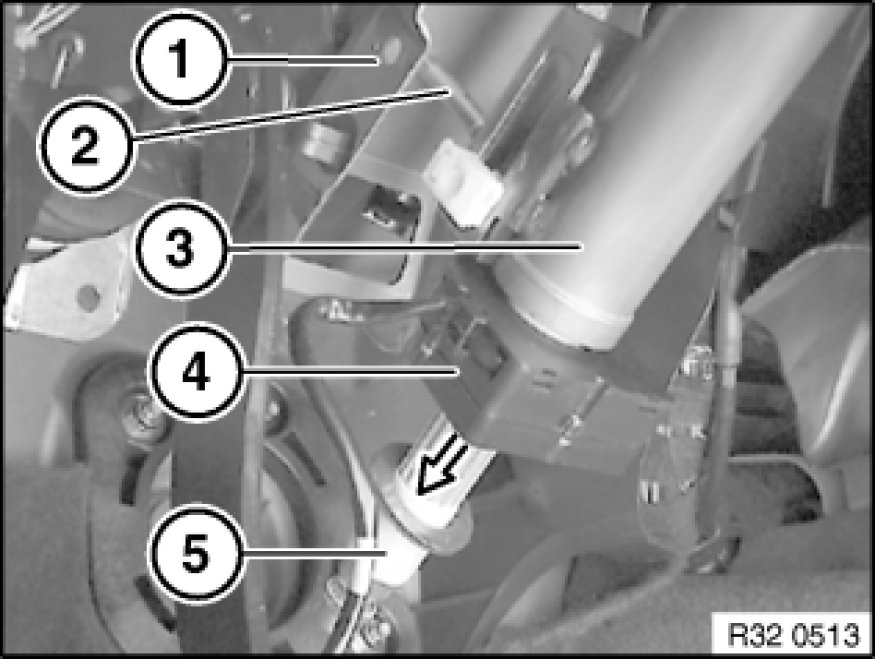

Steering Angle Sensor: Service and Repair
32 31 082 - Removing and installing/replacing steering angle sensor

Necessary preliminary tasks:
- Slide upper steering spindle into steering column (see "Replacing sleeve for steering spindle Replacing Steering Spindle Sleeve")
After installation:
- Replacement only: Carry out programming/coding Programming and Relearning
- Carry out steering angle sensor adjustment Adjustments

Release screw (1).
Note:
For the following work step, the plug connection does not have to be disconnected nor does the brake pedal return spring have to be disengaged.
Remove holder (3) with brake light switch from pedal assembly bearing block (2).
Installation:
Insert holder (3) with guide (4) into opening in pedal assembly bearing block (2).

Unscrew nut (1).
Tightening torque 32 31 16AZ [1][2]Specifications.
Press brake pedal forwards.
Press out screw (2) with a suitable tool.
Remove plug connection for steering angle sensor (4) from holder, unlock and disconnect.
Expose cable up to steering angle sensor (4).
Installation:
Align guide bushes (3) to bores in mounting plate (5).

Pull steering column (3) downwards a little.
Insert a spacer (2) with a height of 4 to 5 cm between mounting plate (1) and steering column (3).
Detach sleeve (5) from upper steering spindle.
Press both hooks inwards and detach steering angle sensor (4) towards bottom.